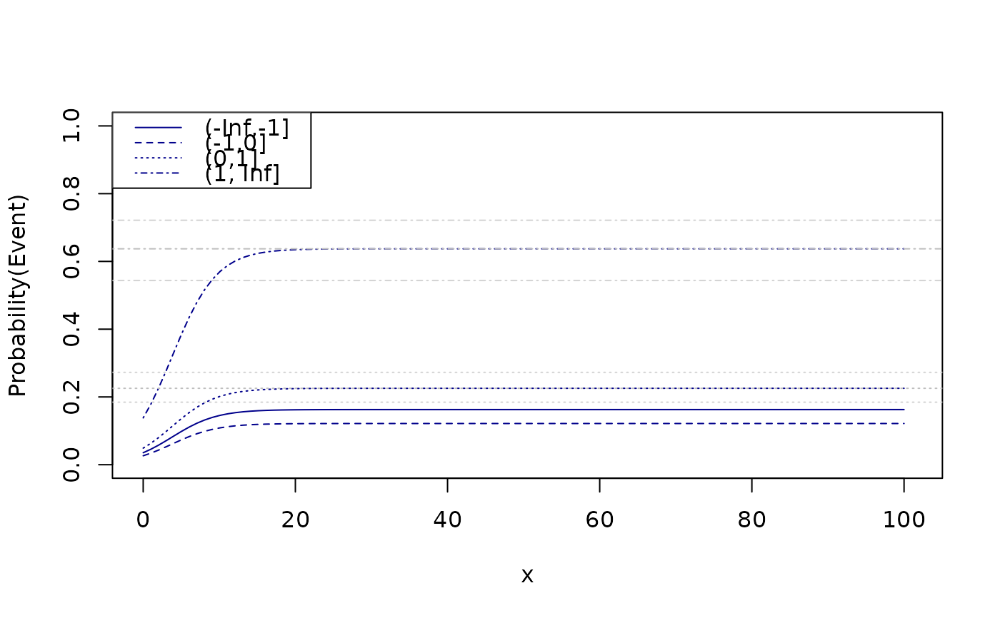

Regression model for binomial data with unkown group of immortals (zero-inflated binomial regression)
Usage
zibreg(
formula,
formula.p = ~1,
data,
family = stats::binomial(),
offset = NULL,
start,
var = "hessian",
...
)Arguments
- formula
Formula specifying
- formula.p
Formula for model of disease prevalence
- data
data frame
- family
Distribution family (see the help page
family)- offset
Optional offset
- start
Optional starting values
- var
Type of variance (robust, expected, hessian, outer)
- ...
Additional arguments to lower level functions
Examples
## Simulation
n <- 2e3
x <- runif(n,0,20)
age <- runif(n,10,30)
z0 <- rnorm(n,mean=-1+0.05*age)
z <- cut(z0,breaks=c(-Inf,-1,0,1,Inf))
p0 <- lava:::expit(model.matrix(~z+age) %*% c(-.4, -.4, 0.2, 2, -0.05))
y <- (runif(n)<lava:::tigol(-1+0.25*x-0*age))*1
u <- runif(n)<p0
y[u==0] <- 0
d <- data.frame(y=y,x=x,u=u*1,z=z,age=age)
head(d)
#> y x u z age
#> 1 0 15.6619534 0 (-1,0] 21.65935
#> 2 0 8.7631479 0 (-1,0] 14.06870
#> 3 0 8.6291196 1 (1, Inf] 21.59505
#> 4 0 0.5499576 0 (0,1] 21.81296
#> 5 0 2.9312369 1 (0,1] 29.54373
#> 6 0 8.4519032 0 (-1,0] 14.15076
## Estimation
e0 <- zibreg(y~x*z,~1+z+age,data=d)
e <- zibreg(y~x,~1+z+age,data=d)
compare(e,e0)
#>
#> - Likelihood ratio test -
#>
#> data:
#> chisq = 12.278, df = 6, p-value = 0.05606
#> sample estimates:
#> log likelihood (model 1) log likelihood (model 2)
#> -846.4202 -840.2815
#>
e
#> Estimate 2.5% 97.5% P-value
#> (Intercept) -1.28441289 -1.900385245 -0.66844054 4.372195e-05
#> x 0.33928559 0.160300206 0.51827098 2.029487e-04
#> pr:(Intercept) -0.11215262 -0.659438960 0.43513372 6.879449e-01
#> pr:z(-1,0] -0.33975924 -0.763691542 0.08417306 1.162275e-01
#> pr:z(0,1] 0.40405512 -0.005142301 0.81325254 5.294938e-02
#> pr:z(1, Inf] 2.20163957 1.712058845 2.69122029 1.208246e-18
#> pr:age -0.07630284 -0.100635280 -0.05197041 7.938579e-10
#>
#> Prevalence probabilities:
#> Estimate 2.5% 97.5%
#> {(Intercept)} 0.4719912 0.3408657 0.6070989
#> {(Intercept)} + {z(-1,0]} 0.3889063 0.2729729 0.5189329
#> {(Intercept)} + {z(0,1]} 0.5724618 0.4345205 0.6999870
#> {(Intercept)} + {z(1, Inf]} 0.8898772 0.7998351 0.9423350
#> {(Intercept)} + {age} 0.4530251 0.3278957 0.5843865
PD(e0,intercept=c(1,3),slope=c(2,6))
#> Estimate Std.Err 2.5% 97.5%
#> 50% 2.128146 4.370486 -6.437849 10.69414
#> attr(,"b")
#> [1] -0.3705218 0.1741055
B <- rbind(c(1,0,0,0,20),
c(1,1,0,0,20),
c(1,0,1,0,20),
c(1,0,0,1,20))
prev <- summary(e,pr.contrast=B)$prevalence
x <- seq(0,100,length.out=100)
newdata <- expand.grid(x=x,age=20,z=levels(d$z))
fit <- predict(e,newdata=newdata)
plot(0,0,type="n",xlim=c(0,101),ylim=c(0,1),xlab="x",ylab="Probability(Event)")
count <- 0
for (i in levels(newdata$z)) {
count <- count+1
lines(x,fit[which(newdata$z==i)],col="darkblue",lty=count)
}
abline(h=prev[3:4,1],lty=3:4,col="gray")
abline(h=prev[3:4,2],lty=3:4,col="lightgray")
abline(h=prev[3:4,3],lty=3:4,col="lightgray")
legend("topleft",levels(d$z),col="darkblue",lty=seq_len(length(levels(d$z))))
